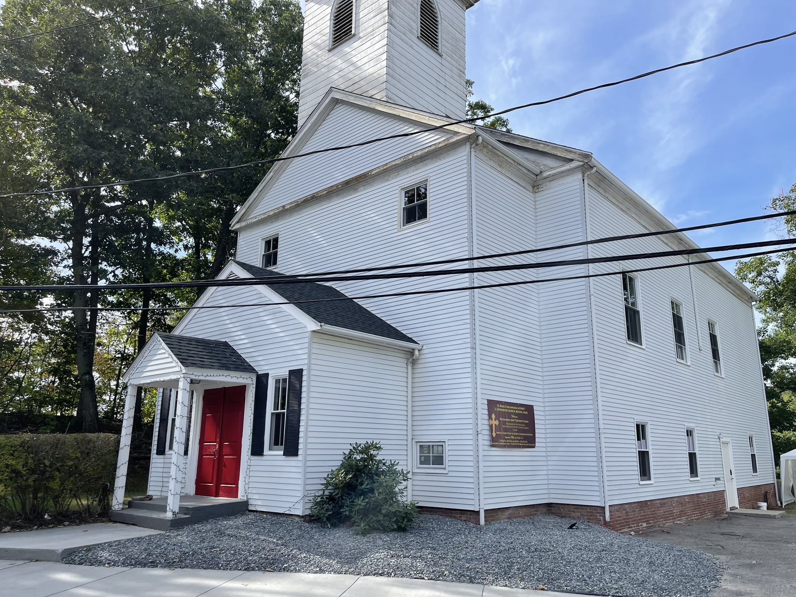
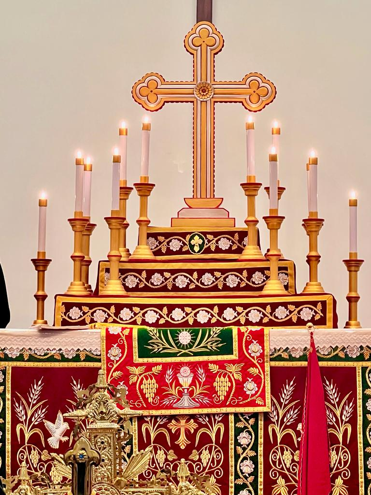

About the Church

St. Basil’s Syriac Orthodox Church of Boston is located in the city of Newton, very close to Boston and easily accessible by public transport system from Boston area. Also easily accessible by road, just off I95 interstate high way, very convenient for anyone live in closer to Boston city center as well as live in the suburbs.
This Malayalee Church mainly consists of the SOCA members from South India (Kerala) who speak the Malayalam language. We belong to the very ancient church called ‘Syriac Orthodox Church of Antioch (SOCA)’, one of the members of the Oriental Orthodox Church family. The Syriac Orthodox Church is held to be the first church of Christianity established by the Apostle St. Peter.
Our church is named after St. Baseliose Eldho, who is entombed at Kothamangalam Mar Thoma Cheriapally in Kerala, India.
Our Parish, St. Basils Syriac Orthodox Church was founded in the city of Newton near Boston, Massachussets in August 2009. It was by the dedication, prayers and efforts of several SOCA families from India, that this church was formed in Newton, Massachusetts. The Archbishop of the Malankara Syriac Orthodox Church in N. America. officially inaugurated the church and conducted the first Holy Qurbono (Mass) in Malayalam on August 30, 2009.
Newton is a city in Middlesex County, Massachusetts and well connected with public transport system. Church is a 10 mins walk from Eliot Station in Newton.
Our Faith
Our parish belongs to oriental orthodox church family called Malankara Jacobite Syrian Orthodox Church.
Visit our Archdiocese page for more details of history of the Malankara Archdiocese of the Syrian Orthodox Church in North America:
1. Malankara Archdiocese of the Syrian Orthodox Church in North America →
2. A Brief Overview Of The Holy Syriac Orthodox Church →
Major Milestones
Inaugurated: August 30, 2009 by The Archbishop His Eminence Mor Titus Yeldho
Consecrated after renovation: October 01, 2022 by The Archbishop His Eminence Mor Titus Yeldho
Our Mission
The Mission of the St. Basil’s Syriac Orthodox Church is to be a part of the redemptive grace and mercy of our Savior Jesus Christ, the Son of God the Father, through the indwelling and communion of the Holy Spirit, through which all people may be saved and come to the knowledge of the truth.
To worship, the Holy Trinity, which is uncreated, self-existent, eternal, adorable and of one essence and to provide the community a place of worship in accordance to the faith and traditions of the Syriac Orthodox Church for the sanctification and eternal salvation of all.
To preach, the fullness of the gospel of the Kingdom of God, especially the message of the angel, the birth of our Lord and Savior Jesus Christ in the flesh, His baptism in the Jordan River, His fast of forty days, His voluntary passion and His ascending the Cross, His life-giving death and revered burial, His glorious resurrection, His ascension into heaven, His sitting on the right hand of God the Father and His glorious second coming.
To serve and witness to the truth, through acts of kindness.
Our Service
The Holy Qurbono is conducted every Sunday morning in Malayalam and English.
